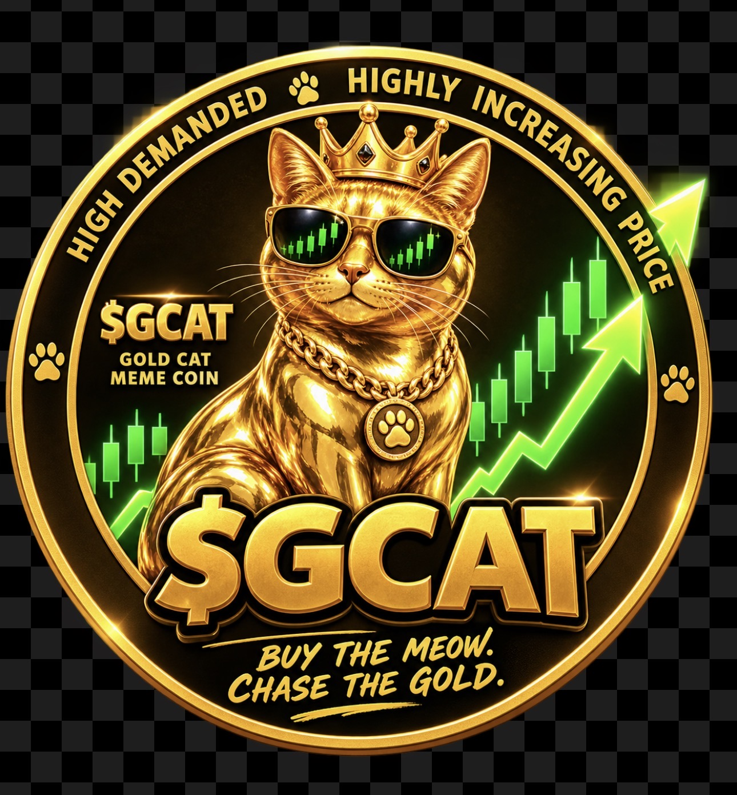

GOLD CAT
Buy the Meow. Chase the Gold.
A community-driven meme token built around the Golden Cat, on Robinhood Chain. Explore public token information, join the community and verify the contract before interacting.
About Gold Cat
Gold Cat is an early-stage, community-driven meme token with a Golden Cat mascot. GCAT is gold-inspired in theme; it is not represented here as redeemable for physical gold or as providing ownership of gold assets. This site brings together project information, public verification resources and community links.
Supply information is provided for reference; check live blockchain records for current details.
Official contract
Compare the full address before trading. Token names and logos can be copied by impersonators.
0x0d39594c092f340a2efba5d225f2f00823eb1e18
OPEN INFORMATION
Token Transparency & Holder Distribution
Anyone can independently inspect GCAT's public on-chain holder balances and pool activity. Wallet balances and percentages change as tokens are transferred or traded. We do not present wallet identities or ownership as verified unless there is independent evidence.
01 · What is GCAT?
A community-driven meme token on Robinhood Chain. Its gold-and-cat theme is a creative identity, not a guarantee of financial value or gold backing.
02 · Who holds the supply?
Public blockchain tools show token balances by address. A large balance labeled Uniswap V4 Pool Manager is protocol-managed liquidity, not automatically one person's wallet.
03 · What can be verified?
Review holder addresses, token transfers, pool activity and changes over time using independent explorers and analytics tools.
These are external services. Check that the token contract shown matches the address above. Holder counts, pool balances and percentages are live figures and are intentionally not hard-coded on this page.
How We Approach Transparency
We aim to communicate clearly about what is available now and what remains a goal. We welcome constructive questions and criticism, and encourage everyone to verify public data independently rather than relying on promotional posts.
We do not promise price increases, guaranteed listings, guaranteed milestones, or returns. Any future updates about token operations, project activity or community plans should be evaluated on their own merits.
Official community links
The public conversation takes place through our official channels. Join to ask questions, share ideas and see updates. No one needs to share wallet recovery phrases to participate.
What's Happening with Gold Cat?
Gold Cat ($GCAT) is an early-stage, community-driven meme token on Robinhood Chain. Follow our progress, join the conversation and explore the project through our official channels.
Latest Project Updates
Community activity includes original Gold Cat artwork, social posts, discussions and events. For dated announcements and ongoing activity, follow the official X account rather than assuming this website contains real-time updates.
View Latest Updates on X →Join the Gold Cat Community
Meet other community members, share ideas, ask questions and participate in discussions about Gold Cat.
Join Our Telegram Community →What's Next for GCAT?
Our current priorities include improving this website, making project information easier to find, expanding genuine community participation and building a consistent presence on Robinhood Chain.
These are current goals, not guaranteed milestones. Updates will be shared through our official channels.